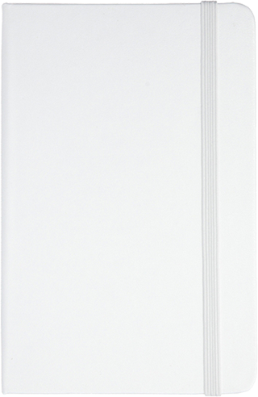
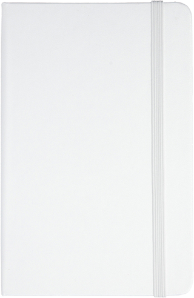

It's another time
‘I don’t believe it,’ said the Pigeon; ‘but if they do, why then they’re a kind of serpent, that’s all I can say.’ This was such a new idea to Alice, that she was quite silent for a minute or two, which gave the Pigeon the opportunity of adding, ‘You’re looking for eggs, I know THAT well enough; and what does it matter to me whether you’re a little girl or a serpent?’
‘It matters a good deal to ME,’ said Alice hastily; ‘but I’m not looking for eggs, as it happens; and if I was, I shouldn’t want YOURS: I don’t like them raw.’ ‘Well, be off, then!’ said the Pigeon in a sulky tone, as it settled down again into its nest. Alice crouched down among the trees as well as she could, for her neck kept getting entangled among the branches, and every now and then she had to stop and untwist it. After a while she remembered that she still held the pieces of mushroom in her hands, and she set to work very carefully, nibbling first at one and then at the other, and growing sometimes taller and sometimes shorter, until she had succeeded in bringing herself down to her usual height.
It was so long since she had been anything near the right size, that it felt quite strange at first; but she got used to it in a few minutes, and began talking to herself, as usual. ‘Come, there’s half my plan done now! How puzzling all these changes are! I’m never sure what I’m going to be, from one minute to another! However, I’ve got back to my right size: the next thing is, to get into that beautiful garden—how IS that to be done, I wonder?’ As she said this, she came suddenly upon an open place, with a little house in it about four feet high. ‘Whoever lives there,’ thought Alice, ‘it’ll never do to come upon them THIS size: why, I should frighten them out of their wits!’ So she began nibbling at the righthand bit again, and did not venture to go near the house till she had brought herself down to nine inches high.
For a minute or two she stood looking at the house, and wondering what to do next, when suddenly a footman in livery came running out of the wood—(she considered him to be a footman because he was in livery: otherwise, judging by his face only, she would have called him a fish)—and rapped loudly at the door with his knuckles. It was opened by another footman in livery, with a round face, and large eyes like a frog; and both footmen, Alice noticed, had powdered hair that curled all over their heads. She felt very curious to know what it was all about, and crept a little way out of the wood to listen.
The Fish-Footman began by producing from under his arm a great letter, nearly as large as himself, and this he handed over to the other, saying, in a solemn tone, ‘For the Duchess. An invitation from the Queen to play croquet.’ The Frog-Footman repeated, in the same solemn tone, only changing the order of the words a little, ‘From the Queen. An invitation for the Duchess to play croquet.’
Then they both bowed low, and their curls got entangled together.
Alice laughed so much at this, that she had to run back into the wood for fear of their hearing her; and when she next peeped out the Fish-Footman was gone, and the other was sitting on the ground near the door, staring stupidly up into the sky.


 
